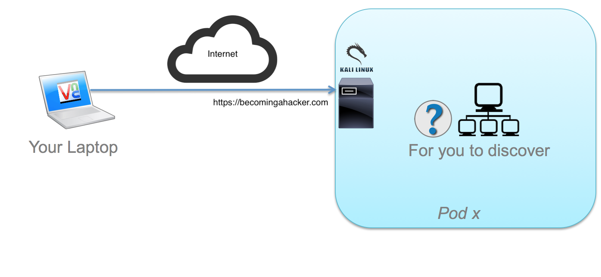

The purpose of this lab is to provide the student a better understanding of offensive security.
Navigate to the Resources page to obtain the presentations used in this class, as well as other resources on how to build your own lab.
Chris McCoy
Hacker, ASIG
cmm@cisco.com
Everett Stiles
Hacker, ASIG
estiles@cisco.com
Omar Ωr Santos
Peasant, PSIRT
os@cisco.com
Active Reconnaissance
You need t figure out the network topology in your own (as part of this exercise/module). However, the following are the instructions on how to connect to the lab:

Exercise 1: Using NMAP
Open a terminal session in your Kali box and type nmap.
Nmap Options
1
nmap -h
Task 1
Using nmap try to learn the hosts that are active in your network and all the "victims" you can find
Constrain your search to 192.168.1.0/24 and 192.168.2.0/24
Task 2
Once you find all the active hosts, try to find all the open TCP and UDP ports on those machines.
nmap doesn't scan all ports by default. It limits itself to 1000 or so common ports. Figure out how to override this.
UDP takes a long time. You might defer that scan for later.
Task 3
Add Server Version checks (-sV) to gain more information.
msf > db_status
[*] postgresql connected to msf
msf >
Task 4
Using db_nmap instead of nmap, run the same commands you ran in Exercise 1 to load information into the database. This information will stay persistent for successive modules. You should be able to run the services command and see the services found by nmap at anytime without scanning again.
Using db_nmap
7
services
msf > services
Services
========
host port proto name state info
---- ---- ----- ---- ----- ----
192.168.1.2 22 tcp ssh open OpenSSH 6.0p1 Debian 4+deb7u1 protocol 2.0
192.168.1.2 3790 tcp http open nginx
192.168.1.2 5800 tcp vnc-http open x11vnc
192.168.1.2 5900 tcp vnc open VNC protocol 3.7
192.168.1.3 21 tcp ftp open vsftpd 2.3.4
192.168.1.3 22 tcp ssh open OpenSSH 4.7p1 Debian 8ubuntu1 protocol 2.0
192.168.1.3 23 tcp telnet open Linux telnetd
192.168.1.3 25 tcp smtp open Postfix smtpd
192.168.1.3 53 tcp domain open ISC BIND 9.4.2
...
Exercise 3 : Using Wireshark
Task 1
Open Wireshark and listen to the eth1 network interface. What protocols are present?
You may only see BROADCAST traffic but it may be informative.
Filter for:
* arp
* netbios
* rip
* udp.port != 1985
* etc..
If the domain you want to query allows DNS zone transfers, you can get those, too. The reality of life on the Internet, however, is that very few domains allow unrestricted transfers these days, and limit zone transfers to secondary name server IPs. You'll learn how to bypass IP access control lists later in the course.